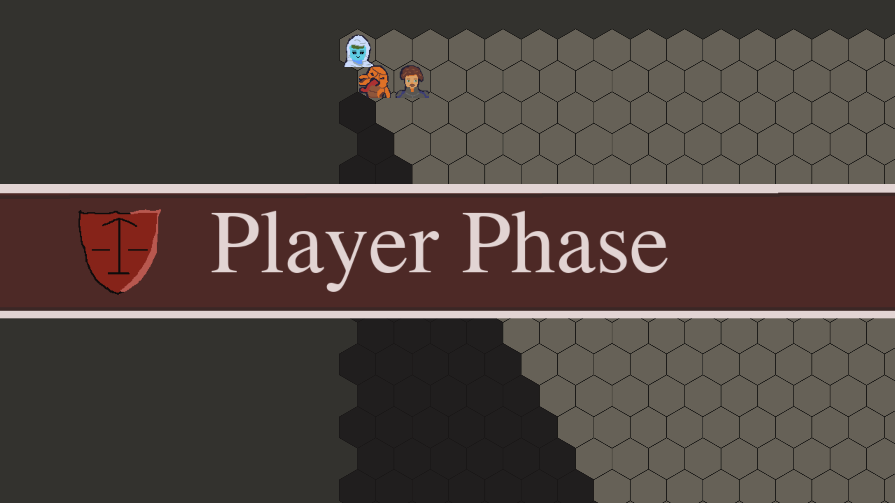
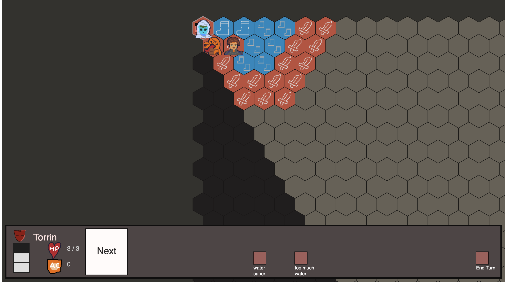

Torrin's Trial
By Chad Serrant
Coming October 2023
Turn Based Strategy. Finish the War against the Demons!
Torrin's Trial turn-based strategy game where you control Torrin, a young water elemental.
She has the plan to help the Crusaders defeat the remains of a demon army who occupy the Fell Desert.
But the demons have caught wind of the plan and will stop her before she gets started.
Defeat demons with cunning tactics and a bit of luck. Let swords, flames and water lead you to victory.
Play this game on the web.



The Team
Torrin is not officially the leader of the squad, but the teammates always wait for her approval. follows her to
some degree.
With blessings from the deity of justice, she
can bless her allies and blast her foes with holy water.
Torrin has three allies to help her:

Sir Camil - A human Crusader who befriended Torrin and led her down the path of justice. He hopes to end the
demons as soon as possible. His tough armor and tougher shield provides protection against physical attacks.
Birnam - This Fire Djinn joined the warfront to protect his family and end the Crusader's occupation. He is a
demolition expert who creates explosions, smoke and dad jokes.
Petra - A woman made of stone who takes her mission very seriously. She prefers subtlety when approaching
problems.
Other characters
Torrin is not alone. The other Crusaders and locals join her on the quest.
- Varney - Sir Camil's cousin enjoys the entertainment, but not the fighting. Still, he follows his orders.
- High Priestess Aezma - Her hometown borders the Fell Desert, and she welcomes the chance to use her divine magic
to restore order.
- General Darius - A pragmatic man who recognizes the political cost of the Crusade. He keeps his ears open,
inspiring his squaddies to plan new routes to victory.